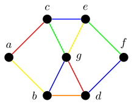
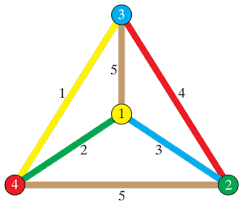
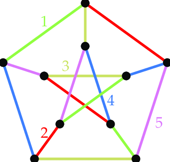

What is Edge Coloring?
Edge coloring is a technique in graph theory where colors are assigned to the edges of a graph such that no two adjacent edges share the same color. This means that if two edges share a common vertex, they must be of different colors. The minimum number of colors required to achieve an edge coloring is called the chromatic index of the graph. Edge coloring is used to solve problems where resources or tasks must be assigned in a non-conflicting manner.
Why is Edge Coloring Important?
Edge coloring has various practical applications, including:
- Network Link Scheduling: Assigning different time slots to communication links in a network to avoid data collisions.
- Job Scheduling: Scheduling jobs on machines where each job requires exclusive use of resources for a certain period.
- Traffic Management: Managing traffic flow at intersections by ensuring that conflicting roads (edges) do not have green lights simultaneously.
- Timetable Design: Creating schedules for sports leagues, where teams (vertices) compete with each other (edges) without conflicts.
- Circuit Design: In electronic circuit design, ensuring that no two adjacent connections share the same signal line color to prevent interference.
Examples of Edge Coloring


